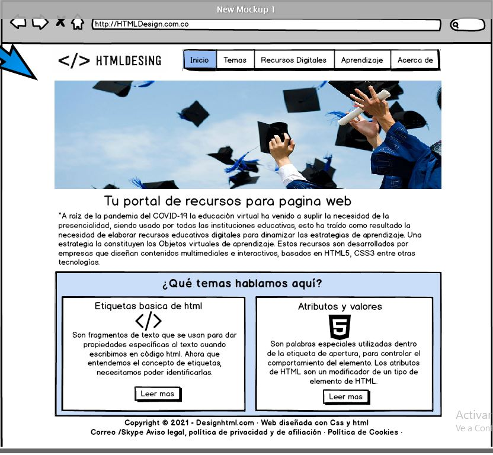

Temas a exponer
Etiquetas basicas del HTML
HTML es un markup languag, lo que significa que esta escrito con codigos que puede leer una persona cin que se necesario compirarlo primero. En otras palabras, el texto es una pagina web está "marcado" con estos códigos para dar instruncions al navegador web sobre c´mo mostrar el texto. Estas etiquetas de marcado son las propias etiquetas HTML.
Idevik, X. (Jun-17). ¿Qué es una eqtiqueta HTML y cuáles son las más importantes?. [Mensaje en un blog]. Recuperado de https://www.iebschool.com/blog/que-es-etiqueta-html-analitica-usabilidad/
Atributos y valores
Son las propiedades que se le pueden asignar a los elementos.
Por ejemplo, a html se le puede asignar un atributo para indicar en qué idioma está escrito el documento (lang) y podemos asignarle como valor un código de idioma ("es" para el español, "en" para el ingles.)
Por supuesto un elemento puede tener varios atributos:
Los atributos deben estar en la etiqueta inicial, nunca en la final.
El orden de los atributos dentro de la etiqueta es indiferente.
Libros, W. (2019). Lenguaje HTML/El código. WIKILIBROS. Recuperado de
https://es.wikibooks.org/wiki/Lenguaje_HTML/El_c%C3%B3digo
Mokup de la pagina principal realizado en balsamid
